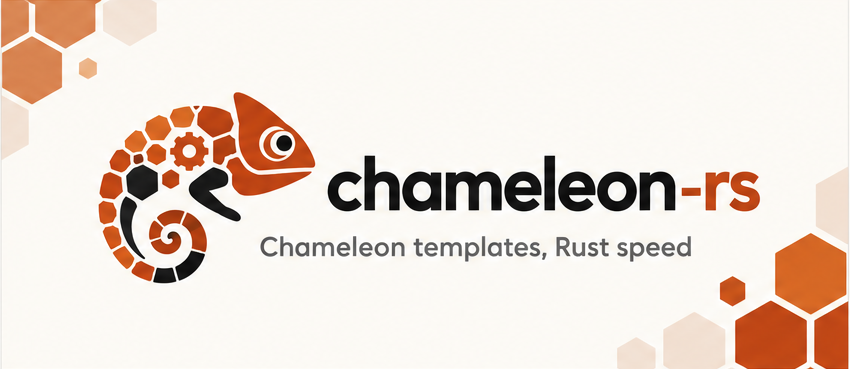

chameleon-rs
Chameleon templates, modernized: a Rust engine that runs Chameleon templates unchanged, several times faster, with async rendering and built-in framework integrations.
Links
AI / Agents
Developers
Meta
Requires: Python >=3.12
Chameleon templates, modernized. Several times faster.
chameleon-rs is Chameleon’s template language on a new engine written in Rust. Your existing templates and code run unchanged, with byte-identical output, several times faster. It also adds what a modern Python web app expects: async rendering that never blocks the event loop, built-in integrations for Flask/Quart, FastAPI, Starlette, Robyn and Litestar, partials, Markdown, and support for free-threaded Python. No runtime dependencies.
Source on GitHub: https://github.com/mikeckennedy/chameleon-rs · Changelog · Issues
from chameleon_rs import PageTemplate
page = PageTemplate('<p tal:repeat="name names">Hello, ${name}!</p>')
print(page(names=['World', 'Rust']))<p>Hello, World!</p>
<p>Hello, Rust!</p>Install
uv pip install chameleon-rsCPython 3.12 to 3.15, including the free-threaded builds (3.14t, 3.15t). The wheels for Linux, macOS and Windows include the compiled engine, so you don’t need a Rust toolchain, and stock Chameleon doesn’t need to be installed.
Already on Chameleon?
Put this at the very top of your app’s entry point, before anything imports Chameleon:
import chameleon_rs.compat
chameleon_rs.compat.install()From then on import chameleon gives chameleon-rs, and so do chameleon_partials, chameleon_flask, fastapi_chameleon and chameleon_robyn. Templates and code stay as they are.
- Same output. Chameleon’s own test suite passes unmodified, all 122 of its fixture templates render byte-identical, and so does every page of two production Flask/Quart sites. See Compatibility.
- Check your own app first. Shadow mode renders a sample of real traffic with both engines and reports any difference, while Chameleon keeps serving. See Switching from Chameleon.
Starting fresh?
Chameleon templates are HTML with tal: attributes and ${...} expressions, so a template is still valid HTML that an editor or browser opens as-is. Point chameleon-rs at a folder and decorate your views. With FastAPI:
import fastapi
import chameleon_rs.fastapi as chameleon
app = fastapi.FastAPI()
chameleon.configure(template_folder='templates', app=app)
@app.get('/episodes/{number}') # the route decorator first...
@chameleon.template('episodes/detail.pt') # ...then @template
async def detail(number: int):
episode = await db.episode(number)
if episode is None:
chameleon.not_found()
return {'episode': episode}Getting started walks through it, and Web frameworks shows the same page in every framework.
What’s new compared with Chameleon
- Errors where the mistake is. An unclosed tag carrying
tal:attributes makes Chameleon render what a condition should hide, or fail lines away with an unrelatedNameError. Withstrict_tags=Trueit’s aParseErrorpointing at that tag and naming the missing end tag. Opt-in. - Async rendering.
await template.render_async(**model)awaits awaitable model values where the template uses them, without blocking the event loop. Opt-in settings run helpers and partials concurrently. - Web frameworks. Flask and Quart, FastAPI, Starlette (a drop-in for
Jinja2Templates), Robyn and Litestar (a template engine forTemplateConfig) are built in; Pyramid’s pyramid_chameleon and Zope/Plone’s z3c.pt run unchanged. - Partials.
${render_partial('shared/card.pt', item=item)}works in every template and renders natively, about 10x faster than Chameleon with chameleon_partials. - HTMX. Built-in partials are HTMX fragments: the page includes one with render_partial, and the HTMX view returns the same template on its own.
- Markdown.
${markdown: post.body}converts CommonMark plus the GitHub extensions while the page renders, in Rust, with raw HTML escaped by default: about 26x faster than mistune, a pure-Python converter. - One place for settings. chameleon_rs.configure() sets the template folder, reloading, partial lookup and Markdown for the whole process.
- Free-threaded Python. Wheels for 3.14t and 3.15t that keep the GIL off.
- Long-standing Chameleon issues fixed.
pathlib.Pathworks wherever a path string does, Zope’srepeat.item.first('category')andlast('category')group a sorted sequence, valueless attributes given a value renderdisabled="disabled",repeat.itemstays right in a recursive macro, a macro call no longer resets a local that shadows a global, and errors insidemetal:fill-slotpoint at the fill’s failing expression. - Typed. Type information for the whole API, checked with
ty.
Fast
Rendering is about 4x to 7x faster than Chameleon on synthetic pages, and 2.2x faster across the pages of a production site, where the app’s own Python code takes much of the time. Templates compile about 70x faster, so the first request after a deploy or reload is quick too. See Performance.

Where to next
- Getting started: render a first template and set up a template folder.
- Switching from Chameleon: the one-line switch and shadow mode.
- Web frameworks: Flask, Quart, FastAPI, Starlette, Robyn, Litestar and Pyramid.
- Language reference: TAL, METAL, i18n and
${...}.